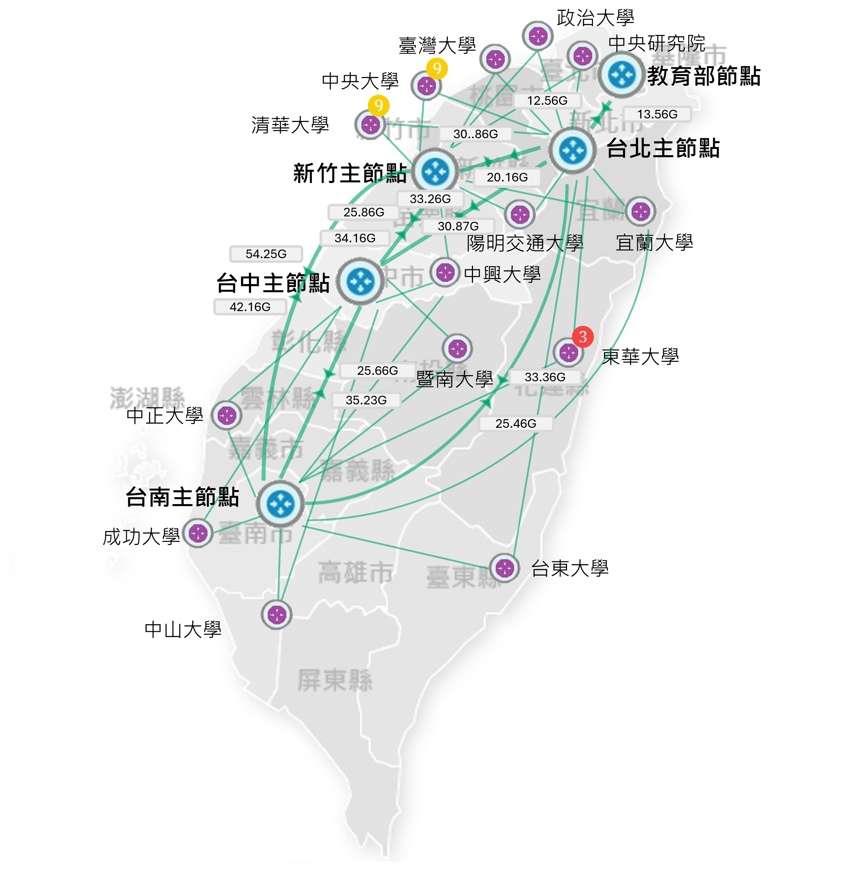

通知
TWAREN 400G 骨幹網路即時監控狀態圖(檢查時間: 2024/06/18 19:00:05)

主節點/區網中心流量
| 節點 | 區網中心 | 總流量 | 流入 | 流出 | |||||||||||||||||||||||||
|---|---|---|---|---|---|---|---|---|---|---|---|---|---|---|---|---|---|---|---|---|---|---|---|---|---|---|---|---|---|
| 教育部節點 | 90 Gbps | 30 Gbps | 60 Gbps | ||||||||||||||||||||||||||
| 台北主節點 | 60 Gbps | 30 Gbps | 30 Gbps | ||||||||||||||||||||||||||
|
|
|||||||||||||||||||||||||||||
| 新竹主節點 | 58 Gbps | 20 Gbps | 38 Gbps | ||||||||||||||||||||||||||
|
|
|||||||||||||||||||||||||||||
| 台中主節點 | 56 Gbps | 36 Gbps | 20 Gbps | ||||||||||||||||||||||||||
|
|
|||||||||||||||||||||||||||||
| 台南主節點 | 65 Gbps | 25 Gbps | 40 Gbps | ||||||||||||||||||||||||||
|
|
|||||||||||||||||||||||||||||
| 中研院節點 | 65 Gbps | 25 Gbps | 40 Gbps | ||||||||||||||||||||||||||
主節點/區網中心設備流量
| 節點/區網 | 設備 | 流量 |
|---|---|---|
| 教育部節點 | TWAREN-TRCT-ASR9006-01 Gi0/1/7 TWAREN-TRTC-ASR9006-01 to III Cisco-3650#1 |
流入 30.14 Gbps
1%
流出 2.04 Gbps
40%
|
| 教育部節點 | TWAREN-TRCT-ASR9006-02 Gi0/1/16 TWAREN-TRTC-ASR9006-02 to III Cisco-3650#2 |
流入 28.01 Gbps
3%
流出 43.23 Gbps
2%
|
| 教育部節點 | TWAREN-TRCT-ASR9006-01 Hun0/0/1.0 TWAREN-TRCT-ASR9006-01 to III Cisco-3650#2 |
流入 28.01 Gbps
3%
流出 43.23 Gbps
2%
|
| 教育部節點 | TWAREN-TRCT-ASR9006-02 Eth1/20 TWAREN-TRTC-ASR9006-02 to III Cisco-3650#2 |
流入 28.01 Gbps
3%
流出 43.23 Gbps
2%
|
| 教育部節點 | TWAREN-TRCT-ASR9006-02 Eth1/23 TWAREN-TRTC-ASR9006-02 to III Cisco-3650#2 |
流入 28.01 Gbps
3%
流出 43.23 Gbps
2%
|
主節點/區網中心設備狀態
| 節點/區網 | 設備 | CPU/Memory |
|---|---|---|
| 教育部節點 | TWAREN-TRCT-ASR9006-01 Gi0/1/7 TWAREN-TRTC-ASR9006-01 to III Cisco-3650#1 |
50% (4 Core x1.7 GHz)
1%
10% (3.2GB/32GB)
1%
|
| 教育部節點 | TWAREN-TRCT-ASR9006-02 Gi0/1/16 TWAREN-TRTC-ASR9006-02 to III Cisco-3650#2 |
25% (4 Core x 2.3 GHz)
8%
34% (10.2GB/32GB)
45%
|
| 教育部節點 | TWAREN-TRCT-ASR9006-01 Hun0/0/1.0 TWAREN-TRCT-ASR9006-01 to III Cisco-3650#2 |
35% (4 Core x 1.8 GHz)
19%
45% (30.4GB/64GB)
7%
|
| 教育部節點 | TWAREN-TRCT-ASR9006-02 Eth1/20 TWAREN-TRTC-ASR9006-02 to III Cisco-3650#2 |
56% (4 Core x 3.2 GHz)
8%
76% (50.1GB/64GB)
7%
|
| 教育部節點 | TWAREN-TRCT-ASR9006-02 Eth1/23 TWAREN-TRTC-ASR9006-02 to III Cisco-3650#2 |
87% (4 Core x 3.7 GHz)
5%
66% (23.1GB/32GB)
10%
|
設備存活狀態統計圖
截至今日尚未結案事件單
| 15 | 56 | 30 |
|---|
| 事件編號 1130101-004 類別 Traffic 設備/單位 TWAREN-TN-ASR001-01 描述 [to TWAREN-AC-AS002-01] in 0 Mbps, out 0Mbps |
2024/06/14 10:05:01 17hr 53min |
|
| 事件編號 1130101-003 類別 Traffic 設備/單位 TWAREN-TN-ASR001-02 描述 [to TWAREN-AC-AS002-02] in 0 Mbps, out 0Mbps, in_high: 9000, in_low: 1e-05, in_avg:0 |
2024/06/14 10:00:01 17hr 48min |
|
| 事件編號 1130101-002 類別 InterfacesPort 設備/單位 TWAREN-TN-ASR001-02 描述 Backbone Circuit Interface(Bundle-Ether2) Abnormal (to TWAREN-NIU-ASR9010-01) |
2024/06/14 09:55:01 17hr 43min |
|
| 事件編號 1130101-001 類別 Traffic 設備/單位 TWAREN-TN-ASR001-01 描述 [to TWAREN-AC-AS002-01] in 0 Mbps, out 0Mbps |
2024/06/14 09:50:01 17hr 33min |
外部監控事件告警列表
| 1 | 3 | 0 |
|---|
| 事件編號 O1130104-001 類別 Traffic 設備/單位 Big Data Platform 描述 大數據資料平台連線Mail伺服器失敗 |
2024/06/14 22:05:01 10hr 53min |
|
| 事件編號 O1130104-002 類別 Traffic 設備/單位 Big Data Platform 描述 大數據資料平台連線失敗 |
2024/06/14 22:05:01 10hr 53min |
|
| 事件編號 O1130104-003 類別 Traffic 設備/單位 Mail Server 描述 Ping Mail 伺服器失敗 |
2024/06/14 22:05:01 10hr 53min |
|
| 事件編號 O1130104-004 類別 Traffic 設備/單位 Mail Server 描述 Ping Mail 伺服器失敗 |
2024/06/14 22:05:01 10hr 53min |